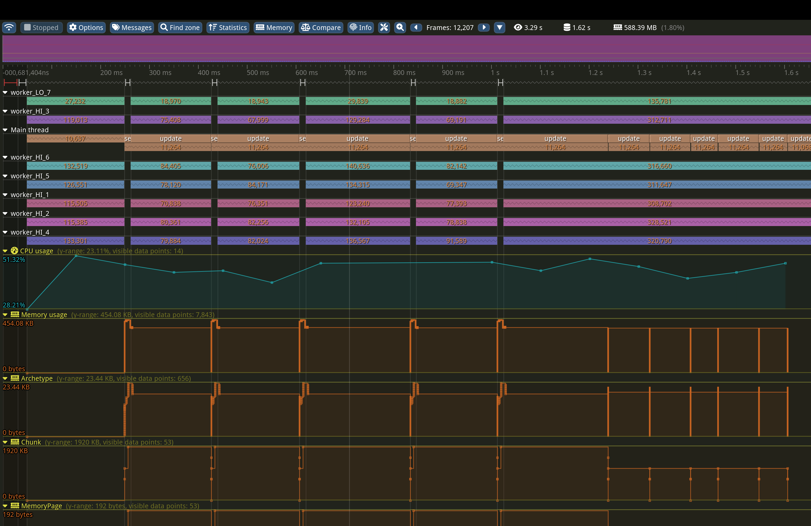
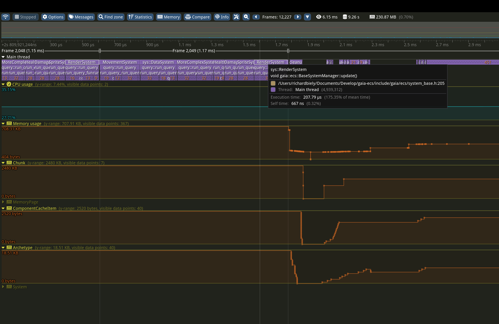

|
Gaia-ECS v0.9.3
A simple and powerful entity component system
|
|
Gaia-ECS v0.9.3
A simple and powerful entity component system
|

Gaia-ECS is a fast and easy-to-use ECS framework. Some of its current features and highlights are:
NOTE: Due to its extensive use of acceleration structures and caching, this library is not a good fit for hardware with very limited memory resources (measured in MiBs or less). Micro-controllers, retro gaming consoles, and similar platforms should consider alternative solutions.
Entity-Component-System (ECS) is a software architectural pattern based on organizing your code around data which follows the principle of composition over inheritance.
Instead of looking at "items" in your program as objects you normally know from the real world (car, house, human) you look at them as pieces of data necessary for you to achieve some result.
This way of thinking is more natural for machines than people but when used correctly it allows you to write faster code (on most architectures). What is most important, however, is it allows you to write code that is easier to maintain, expand and reason about.
For instance, when moving an object from point A to point B you do not care if it is a house or a car. You only care about its position. If you want to move it at some specific speed you will consider also the object's velocity. Nothing else is necessary.
Three building blocks of ECS are:
Following the example given above, a vehicle could be any entity with Position and Velocity components. If it is a car we could attach the Driving component to it. If it is an airplane we would attach the Flying component.
The actual movement is handled by systems. Those that match the Flying component will implement the logic for flying. Systems matching the Driving component handle the land movement.
On the outside ECS is not much different from database engines. The main difference is it does not need to follow the ACID principle which allows it to be optimized beyond what an ordinary database engine could ever be both in terms of latency and absolute performance. At the cost of data safety.
The main strengths of an ECS done right could be summarized as:
Gaia-ECS is an archetype-based entity component system. This means that unique combinations of components are grouped into archetypes. Each archetype consists of chunks - blocks of memory holding your entities and components. You can think of them as database tables where components are columns and entities are rows.
Each chunk is either 8 or 16 KiB big depending on how much data can be effectively used by it. This size is chosen so that the entire chunk at its fullest can fit into the L1 cache on most CPUs. Chunk memory is preallocated in blocks organized into pages via the internal chunk allocator.
Components of the same type are grouped together and laid out linearly in memory. Thanks to all that data is organized in a cache-friendly way which most computer architectures like and actual heap allocations which are slow are reduced to a minimum.
The main benefits of archetype-based architecture are fast iteration and good memory layout by default. They are also easy to parallelize.
On the other hand, adding and removing components can be somewhat slower because it involves moving data around. In our case, this weakness is mitigated by building an archetype graph and having the ability to add and remove components in batches.
In this project, components are entities with the Component component attached to them. Treating components as entities allows for great design simplification and big features.
The entire project is implemented inside gaia namespace. It is further split into multiple sub-projects each with a separate namespaces.
The project has a dedicated external section that contains 3rd-party code. At present, it only includes a modified version of the robin-hood hash-map.
The entire framework is placed in a namespace called gaia. The ECS part of the library is found under gaia::ecs namespace.
In the code examples below we will assume we are inside gaia namespace.
Entity a unique "thing" in World. Creating an entity at runtime is as easy as calling World::add. Deleting is done via World::del. Once deleted, entity is no longer valid and if used with some APIs it is going to trigger a debug-mode assert. Verifying that an entity is valid can be done by calling World::valid.
It is also possible to attach entities to entities. This effectively means you are able to create your own components/tags at runtime.
Each entity can be assigned a unique name. This is useful for debugging or entity lookup when entity id is not present for any reason.
If you already have a dedicated string storage it would be a waste to duplicate the memory. In this case you can use World::name_raw to name entities. It does NOT copy and does NOT store the string internally which means you are responsible for its lifetime. The pointer should be stable. Otherwise, any time your storage tries to move the string to a different place you have to unset the name before it happens and set it anew after the move is done.
Hierarchical name lookup is also possible.
Character '.' (dot) is used as a separator. Therefore, dots can not be used inside entity names.
Components can be created using World::add<T>. This function returns a descriptor of the object which is created and stored in the component cache. Each component is assigned one entity to uniquely identify it. You do not have to do this yourself, the framework performs this operation automatically behind the scenes any time you call some compile-time API where you interact with your structure. However, you can use this API to quickly fetch the component's entity if necessary.
Because components are entities as well, adding them is very similar to what we have seen previously.
This also means the code above could be rewritten as following:
When adding components following restrictions apply:
Whether or not a certain component is associated with an entity can be checked in two different ways. Either via an instance of a World object or by the means of Iter which can be acquired when running queries.
Providing entities is supported as well.
It is possible to register add/del/set hooks for components. When a given component is added to an entity, deleted from it, or the value is set the hook triggers. This comes handy for debugging, or when specific logic is needed for a given component. Component hooks are unique. Each component can have at most one add hook, and one delete hook.
Hooks can easily be removed:
It is also possible to set up a "set" hook. These are triggered whenever write access to component is requested.
Unlike add and del hooks, set hooks will not tell you what entity the hook triggered for. This is because any write access is done for the entire chunk, not just one of its entities. If one-entity behavior is required, the best thing you can do is moving your entity to a separate archetype (e.g. by adding some unique tag component to it).
Hooks can be disabled by defining GAIA_ENABLE_HOOKS 0. Add and del hooks are controled by GAIA_ENABLE_ADD_DEL_HOOKS, set hooks by GAIA_ENABLE_SET_HOOKS. They are all enabled by default.
Observers are a mechanism that allows you to register to certain events and listen to them triggering. Similar to hooks, you can listen to add, del or set events. However, unlike hooks there can be any number of these per given component or entity.
Observers can be looked at as reactive alternative to systems. They allow different parts of the application to react to something happening immediately.
Under the hood they use the query engine, just like systems. However, systems are meant to be used as a reqular part of the frame whereas observers are meant as a reaction to something. Their cost is less predictable, and because the event needs to be evaluated for each observer, listening to the event they can also be more costly.
Following is an observer that generates an OnAdd event every time some entity is added Position and Velocity.
Listening to removal of entities looks similar:
Observers can be enabled by defining GAIA_ENABLE_OBSERVERS 1. The feature is currently disabled by default.
Adding an entity to entity means it becomes a part of a new archetype. Like mentioned previously, becoming a part of a new archetype means that all data associated with the entity needs to be moved to a new place. The more ids in the archetype the slower the move (empty components/tags are an exception because they do not carry any data). For this reason it is not advised to perform large number of separate additions / removals per frame.
Instead, when adding or removing multiple entities/components at once it is more efficient doing it via bulk operations. This way only one archetype movement is performed in total rather than one per added/removed entity.
It is also possible to manually commit all changes by calling ecs::EntityBuilder::commit. This is useful in scenarios where you have some branching and do not want to duplicate your code for both branches or simply need to add/remove components based on some complex logic.
>NOTE:
Once ecs::EntityBuilder::commit is called (either manually or internally when the builder's destructor is invoked) the contents of builder are returned to its default state.
When setting multiple component values at once it is more efficient doing it via chaining:
Similar to ecs::EntityBuilder::build you can also use the setter object in scenarios with complex logic.
Components up to 8 bytes (including) are returned by value. Bigger components are returned by const reference.
Both read and write operations are also accessible via views. Check the iteration sections to see how.
A copy of another entity can be easily created.
Anything attached to an entity can be easily removed using World::clear. This is useful when you need to quickly reset your entity and still want to keep your Entity's id (deleting the entity would mean that as some point it could be recycled and its id could be used by some newly created entity).
Another way to create entities is by creating many of them at once. This is more performant than creating entities one by one.
Every entity in the world is reference counted. When an entity is created, the value of this counter is 1. When ecs::World::del is called the value of this counter is decremented. When it reaches zero, the entity is deleted. However, the lifetime of entities can be extended. Calling ecs::World::del any number of times on the same entity is safe because the reference counter is decremented only on the first attempt. Any further attempts are ignored.
ecs::SafeEntity is a wrapper above ecs::Entity that makes sure that an entity stays alive until the last ecs::SafeEntity referencing the entity goes out of scope. When the wrapper is instantiated it increments the entity's reference counter by 1. When it goes out of scope it decrements the counter by 1. In terms of functionality, this is reminiscent of a C++ smart pointer, std::shared_ptr.
ecs::SafeEntity is fully compatible with ecs::Entity and can be used just like it in all scenarios.
ecs::WeakEntity is a wrapper above ecs::Entity that makes sure that when the entity it references is deleted, it automatically starts acting as ecs::EntityBad. In terms of functionality, this is reminiscent of a C++ smart pointer, std::weak_ptr.
ecs::WeakEntity is fully compatible with ecs::Entity and can be used just like it in all scenarios. As a result, you have to keep in mind that it can become invalid at any point.
Technically, ecs::WeakEntity is almost the same thing as ecs::Entity with one nuance difference. Because entity ids are recycled, in theory, ecs::Entity left lying around somewhere could end up being multiple different things over time. This is not an issue with ecs::WeakEntity because the moment the entity linked with it gets deleted, it is reset to ecs::EntityBad.
This is an edge-case scenario, unlikely to happen even, but should you ever need it ecs::WeakEntity is there to help. If you decided to change the amount of bits allocated to Entity::gen to a lower number you will increase the likelihood of double-recycling happening and increase usefulness of ecs::WeakEntity.
A more useful use case, however, would be if you need an entity identifier that gets automatically reset when the entity gets deleted without any setup necessary from your end. Certain situations can be complex and using ecs::WeakEntity just might be the one way for you to address them.
Once all entities of given archetype are deleted (and as a result all chunks in the archetypes are empty), the archetype stays alive for another 127 ticks of ecs::World::update. However, there might be cases where this behavior is insufficient. Maybe you want the archetype deleted faster, or you want to keep it around forever.
For instance, you might often end up deleting all entities of a given archetype only to create new ones seconds later. In this case, keeping the archetype around can have several performance benefits: 1) no need to recreate the archetype 2) no need to rematch queries with the archetype
Note, if the entity that changed an archetype’s lifespan moves to a new archetype, the new archetype’s lifespan will not be updated.
In case you want to affect an archetype directly without abstracting it away you can retrieve it via the entity's container returned by World::fetch() function:
For querying data you can use a Query. It can help you find all entities, components, or chunks matching a list of conditions and constraints and iterate them or return them as an array. You can also use them to quickly check if any entities satisfying your requirements exist or calculate how many of them there are.
Every Query is cached internally. You likely use the same query multiple times in your program, often without noticing. Because of that, caching becomes useful as it avoids wasting memory and performance when finding matches.
Note, the first Query invocation is always slower than the subsequent ones because internals of the Query need to be initialized.
More complex queries can be created by combining All, Any, and None in any way you can imagine:
All Query operations can be chained and it is also possible to invoke various filters multiple times with unique components:
When the library is built with GAIA_USE_VARIADIC_API enabled (off by default) it is possible to use an even more convenient shortcut at the cost of possibly longer compilation time. This affects not only queries but some other features such as EntityBuilder or systems as well.
Queries can be defined using a low-level API (used internally).
Building cache requires memory. Because of that, sometimes it comes handy having the ability to release this data. Calling myQuery.reset() will remove any data allocated by the query. The next time the query is used to fetch results the cache is rebuilt.
If this is a cached query, even after resetting it it still remains in the query cache. To remove it from there all queries with the matching signature will need to be destroyed first:
Technically, any query could be reset by default initializing it, e.g. myQuery = {}. This, however, puts the query into an invalid state. Only queries created via World::query have a valid state.
Another way to define queries is using the string notation. This allows you to define the entire query or its parts using a string composed of simple expressions. Any spaces in between modifiers and expressions are trimmed.
Supported modifiers:
From the implementation standpoint, uncached queries are the same as ordinary queries in all but one aspect - they do not use the query cache internally. This means that two uncached queries using the same setup are going to evaluate matches separately. As a result, if there are duplicates, more memory, and performance will be wasted.
On the other hand, if you design your queries carefully and they are all different, uncached queries are actually a bit faster to create and match. Creation is faster because there is no hash to compute for the query and matching is faster because no query cache lookups are involved.
Uncached queries are created via World::query< false >.
To process data from queries one uses the Query::each function. It accepts either a list of components or an iterator as its argument.
>NOTE:
Iterating over components not present in the query is not supported and results in asserts and undefined behavior. This is done to prevent various logic errors which might sneak in otherwise.
Processing via an iterator gives you even more expressive power, and opens doors for new kinds of optimizations. Iter is an abstraction over underlying data structures and gives you access to their public API.
There are three types of iterators: 1) Iter - iterates over enabled entities 2) IterDisabled - iterates over disabled entities 3) IterAll - iterates over all entities
Performance of views can be improved slightly by explicitly providing the index of the component in the query.
>NOTE:
The functor accepting an iterator can be called any number of times per one Query::each. Currently, the functor is invoked once per archetype chunk that matches the query. In the future, this can change. Therefore, it is best to make no assumptions about it and simply expect that the functor might be triggered multiple times per call to each.
Query behavior can also be modified by setting constraints. By default, only enabled entities are taken into account. However, by changing constraints, we can filter disabled entities exclusively or make the query consider both enabled and disabled entities at the same time.
Disabling or enabling an entity is a special operation that is invisible to queries. The entity’s archetype is not changed, so the operation is fast.
If you do not wish to fragment entities inside the chunk you can simply create a tag component and assign it to your entity. This will move the entity to a new archetype so it is a lot slower. However, because disabled entities are now clearly separated calling some query operations might be slightly faster (no need to check if the entity is disabled or not internally).
Using changed we can make the iteration run only if particular components change. You can save quite a bit of performance using this technique.
>NOTE:
If there are 100 Position components in the chunk and only one of them changes, the other 99 are considered changed as well. This chunk-wide behavior might seem counter-intuitive but it is in fact a performance optimization. The reason why this works is because it is easier to reason about a group of entities than checking each of them separately.
Changes are triggered as a result of: 1) adding or removing an entity 2) using World::set (World::sset aka silent set doesn't notify of changes) 3) using Iter::view_mut (Iter::sview_mut aka silent mutation doesn't notify of changes) 3) automatically done for mutable components passed to query (see the example above)
Grouping is a feature that allows you to assign an id to each archetype and group them together or filter them based on this id. Archetypes are sorted by their groupId in ascending order. If descending order is needed, you can change your groupIds (e.g. instead of 100 you use ecs::GroupIdMax - 100).
Grouping is best used with relationships. It can be triggered by calling group_by before the first call to each or other functions that build the query (count, empty, arr).
You can choose what group to iterate specifically by calling ***group_id*** prior to iteration.
Custom sorting function can be provided if needed.
Data stored in ECS can be sorted. We can sort either by entity index or by component of choice. To accomplish that the Query::sort_by function is used.
Sorting by entity indices in an descending order (largest entity indices first) could be done as follows:
It is also possible to sort by component data.
A templated version of the function is available for shorter code:
Sorting is an expensive operation and it is advised to use it only for data which is known to not change much. It is definitely not suited for actions happening all the time (unless the amount of entities to sort is small).
You can currently sort only by one criterion (you can pick only one entity/component inside an archetype). If you need more, it is recommended to store your data outside of ECS. Also, make sure multiple systems working with similar data don't end up sorting archetypes as this could trigger constant resorting.
During sorting, entities in chunks are reordered according to the sorting function. However, they are not sorted globally, only independently within chunks. To get a globally sorted view an acceleration structure is created. This way we can ensure data is moved as little as possible.
Resorting is triggered automatically any time the query matches a new archetype, or some of the archetypes it matched disappeared. Adding, deleting, or moving entities on the matched archetypes also triggers resorting.
Queries can make use of mulithreading. By default, all queries are handles by the thread that iterates the query. However, it is possible to execute them by multiple threads at once simply by providing the right ecs::QueryExecType parameter.
Not only is multi-threaded execution possible, but you can also influence what kind of cores actually run your logic. Maybe you want to limit your system's power consumption in which case you target only the efficiency cores. Or, if you want maximum performance, you can easily have all your system's cores participate.
Queries can't make use of job dependencies directly. To do that, you need to use systems.
Entity relationship is a feature that allows users to model simple relations, hierarchies or graphs in an ergonomic, easy and safe way. Each relationship is expressed as following: "source, (relation, target)". All three elements of a relationship are entities. We call the "(relation, target)" part a relationship pair.
Relationship pair is a special kind of entity where the id of the "relation" entity becomes the pair's id and the "target" entity's id becomes the pairs generation. The pair is created by calling ecs::Pair(relation, target) with two valid entities as its arguments.
Adding a relationship to any entity is as simple as adding any other entity.
This by itself would not be much different from adding entities/component to entities. A similar result can be achieved by creating a "eats_carrot" tag and assigning it to "hare" and "rabbit". What sets relationships apart is the ability to use wildcards in queries.
There are three kinds of wildcard queries possible:
The "*" wildcard is expressed via All entity.
Relationships can be ended by calling World::del (just like it is done for regular entities/components).
Whether a relationship exists can be check via World::has (just like it is done for regular entities/components).
A nice side-effect of relationships is they allow for multiple components/entities of the same kind be added to one entity.
Pairs do not need to be formed from tag entities only. You can use components to build a pair which means they can store data, too! To determine the storage type of Pair(relation, target), the following logic is applied: 1) if "relation" is non-empty, the storage type is rel 2) if "relation" is empty and "target" is non-empty, the storage type is "target"
Targets of a relationship can be retrieved via World::target and World::targets.
Relations of a relationship can be retrieved via World::relation and World::relations.
Defining dependencies among entities is made possible via the (Requires, target) relationship.
When adding an entity with a dependency to some source it is guaranteed the dependency will always be present on the source as well. It will also be impossible to delete it.
Entity constrains are used to define what entities can not be combined with others.
Entities can be defined as exclusive. This means that only one relationship with this entity as a relation can exist. Any attempts to create a relationship with a different target replaces the previous relationship.
Entities can inherit from other entities by using the (Is, target) relationship. This is a powerful feature that helps you identify an entire group of entities using a single entity.
The Is relation ship can be very helpful when used in queries. However, before this feature can be properly utilized, one needs to make sure the entity in the Is relationship is treated as a type (has a separate archetype).
>NOTE:
Currently inheritance works only for checking if something is something else. In the future, all ids that are present on the entity we inherit from will also be present on the inherited entity.
When deleting an entity we might want to define how the deletion is going to happen. Do we simply want to remove the entity or does everything connected to it need to get deleted as well? This behavior can be customized via relationships called cleanup rules.
Cleanup rules are defined as ecs::Pair(Condition, Reaction).
Condition is one of the following:
Reaction is one of the following:
The default behavior of deleting an entity is to simply remove it from the parent entity. This is an equivalent of Pair(OnDelete, Remove) relationship pair attached to the entity getting deleted.
Additionally, a behavior which can not be changed, all relationship pairs formed by this entity need to be deleted as well. This is needed because entity ids are recycled internally and we could not guarantee that the relationship entity would be be used for something unrelated later.
All core entities are defined with (OnDelete,Error). This means that instead of deleting the entity an error is thrown when an attempt to delete the entity is made.
Creating custom rules is just a matter of adding a relationship to an entity.
A core entity ChildOf can be used to express a physical hierarchy. It uses the (OnDeleteTarget, Delete) relationship so if the parent is deleted, all its children are deleted as well.
Unique component is a special kind of data that exists at most once per chunk. In other words, you attach data to one chunk specifically. It survives entity removals and unlike generic components, they do not transfer to a new chunk along with their entity.
If you organize your data with care (which you should) this can save you some very precious memory or performance depending on your use case.
For instance, imagine you have a grid with fields of 100 meters squared. If you create your entities carefully they get organized in grid fields implicitly on the data level already without you having to use any sort of spatial map container.
Sometimes you need to delay executing a part of the code for later. This can be achieved via command buffers.
Command buffer is a container used to record commands in the order in which they were requested at a later point in time.
Typically you use them when there is a need to perform structural changes (adding or removing an entity or component) while iterating queries.
Performing an unprotected structural change is undefined behavior and most likely crashes the program. However, using a command buffer you can collect all requests first and commit them when it is safe later.
You can use either a command buffer provided by the iterator or one you created. There are two kinds of the command buffer - ecs::CommandBufferST that is not thread-safe and should only be used by one thread, and ecs::CommandBufferMT that is safe to access from multiple threads at once.
The command buffer provided by the iterator is committed in a safe manner when the world is not locked for structural changes, and is a recommended way for queuing commands.
With custom command buffer you need to manage things yourself. However, if might come handy in situations where things are fully under your control.
If you try to make an unprotected structural change with GAIA_DEBUG enabled (set by default when Debug configuration is used) the framework will assert letting you know you are using it the wrong way.
>NOTE:
There is one situation to be wary about with command buffers. Function add accepting a component as template argument needs to make sure that the component is registered in the component cache. If it is not, it will be inserted. As a result, when used from multiple threads, both CommandBufferST and CommandBufferMT are a subject to race conditions. To avoid them, make sure that the component T has been registered in the world already. If you already added the component to some entity before, everything is fine. If you did not, you need to call this anywhere before you run your system or a query:
>Technically, template versions of functions set and del experience a similar issue. However, calling neither set nor del makes sense without a previous call to add. Such attempts are undefined behaviors (and reported by triggering an assertion).
Before applying any operations to the world, the command buffer performs operation merging and cancellation to remove redundant or meaningless actions.
| Sequence | Result |
|---|---|
add(e) + del(e) | No effect — entity never created |
copy(src) + del(copy) | No effect — copy canceled |
add(e) + component ops + del(e) | No effect — full chain canceled |
del(e) on an existing entity | Entity removed normally |
| Sequence | Result |
|---|---|
add<T>(e) + set<T>(e, value) | Collapsed into add<T>(e, value) |
add<T>(e, value1) + set<T>(e, value2) | Only the last value is used |
add<T>(e) + del<T>(e) | No effect — component never added |
add<T>(e, value) + del<T>(e) | No effect — component never added |
set<T>(e, value1) + set<T>(e, value2) | Only the last value is used |
Only the final state after all recorded operations is applied on commit. This means you can record commands freely, and the command buffer will merge your requests in such a way that the world update is always minimal and correct.
Systems are were your programs logic is executed. This usually means logic that is performed every frame / all the time. You can either spin your own mechanism for executing this logic or use the build-in one.
Creating a system is very similar to creating a query. In fact, the built-in systems are queries internally. Ones which are performed at a later point in time. For each system an entity is created.
The system can be run manually or automatically.
Letting systems run via World::update automatically is the preferred way and what you would normally do. Gaia-ECS can resolve any dependencies and execute the systems in the right order.
By default, the order in which the systems are run depends on their entity id. The lower the id the earlier the system is executed. If a different order is needed, there are multiple ways to influence it.
One of them is adding the DependsOn relationship to a system's entity.
If you need a specific group of systems depend on another group it can be achieved via the ChildOf relationship.
Systems support parallel execution and creating various job dependencies among them because they make use of the jobs internally. To learn more about jobs, navigate here. The logic is virtually the same as shown in the job dependencies example:
Job handles created by the systems stay active until their system is deleted. Therefore, when managing system dependencies manually and their repeated use is wanted, job handles need to be refreshed before the next iteration:
By default, all data inside components are treated as an array of structures (AoS). This is the natural behavior of the language and what you would normally expect.
Consider the following component:
If we imagine an ordinary array of 4 such Position components they are organized like this in memory: xyz xyz xyz xyz.
However, in specific cases, you might want to consider organizing your component's internal data as a structure or arrays (SoA): xxxx yyyy zzzz.
To achieve this you can tag the component with a GAIA_LAYOUT of your choosing. By default, GAIA_LAYOUT(AoS) is assumed.
If used correctly this can have vast performance implications. Not only do you organize your data in the most cache-friendly way this usually also means you can simplify your loops which in turn allows the compiler to optimize your code better.
You can even use SIMD intrinsics now without a worry. Note, this is just an example not an optimal way to rewrite the loop. Also, most compilers will auto-vectorize this code in release builds anyway. The code below uses x86 SIMD intrinsics:
Different layouts use different memory alignments. GAIA_LAYOUT(SoA) and GAIA_LAYOUT(AoS) align data to 8-byte boundaries, while GAIA_LAYOUT(SoA8) and GAIA_LAYOUT(SoA16) align to 16 and 32 bytes respectively. This makes them a good candidate for AVX and AVX512 instruction sets (or their equivalent on different platforms, such as NEON on ARM).
Any data structure can be serialized into the provided serialization buffer. Native types, compound types, arrays, or any types exposing size(), begin() and end() functions are supported out of the box. If a resize() function is available, it will be used automatically. In some cases, you may still need to provide specializations, though. Either because the default behavior does not match your expectations, or because the program will not compile otherwise.
Serialization of arbitrary data is available in two different formats. One for compile-time serialization, and the other for runtime serialization. Their interface is the same.
Compile-time serialization is available via following functions:
It is not tied to ECS world and you can use it anywhere in your codebase.
Example:
Customization is possible for data types which require special attention. We can guide the serializer by either external or internal means.
External specialization comes handy in cases where we can not or do not want to modify the source type:
You will usually use internal specialization when you have the access to your data container and at the same time do not want to expose its internal structure. Or if you simply like intrusive coding style better. In order to use it the following 3 member functions need to be provided:
It doesn't matter which kind of specialization you use. If both are used the external one takes priority.
For runtime serialization you need to use the provided ser::ISerializer base and override the exposed virtual functions.
This way you can create any serializer you want. For example, you can serialize your data to json or any other custom format you can imagine. You can give it support for versioning and so on.
Runtime serialization it tied to ECS world. You can hook it up via World::set_serializer.
Your serializer must remain valid for the entire time it is used by ecs::World. The world only stores a plain pointer to it. Therefore, if the serializer disappered and you forgot to call set_serializer(nullptr), the world would end up with a dangling pointer.
World serialization can be accessed via World::save and World::load functions.
Note that for this feature to work correctly, components must be registered in a fixed order. If you called World::save and registered Position, Rotation, and Foo in that order, the same order must be used when calling World::load. This usually isn’t an issue when loading data within the same program on the same world, but it matters when loading data saved by a different world or program.
To fully utilize your system's potential Gaia-ECS allows you to spread your tasks into multiple threads. This can be achieved in multiple ways.
Tasks that can not be split into multiple parts or it does not make sense for them to be split can use ThreadPool::sched. It registers a job in the job system and immediately submits it so worker threads can pick it up:
When crunching larger data sets it is often beneficial to split the load among threads automatically. This is what ThreadPool::sched_par is for.
Sometimes we need to wait for the result of another operation before we can proceed. To achieve this we need to use low-level API and handle job registration and submitting jobs on our own. >NOTE:
This is because once submitted we can not modify the job anymore. If we could, dependencies would not necessary be adhered to.
Let us say there is a job A that depends on job B. If job A is submitted before creating the dependency, a worker thread could execute the job before the dependency is created. As a result, the dependency would not be respected and job A would be free to finish before job B.
Nowadays, CPUs have multiple cores. Each of them is capable of running at different frequencies depending on the system's power-saving requirements and workload. Some CPUs contain cores designed to be used specifically in high-performance or efficiency scenarios. Or, some systems even have multiple CPUs.
Therefore, it is important to have the ability to utilize these CPU features with the right workload for our needs. Gaia-ECS allows jobs to be assigned a priority tag. You can either create a high-priority jobs (default) or low-priority ones.
The operating system should try to schedule the high-priority jobs to cores with highest level of performance (either performance cores, or cores with highest frequency etc.). Low-priority jobs are to target slowest cores (either efficiency cores, or cores with lowest frequency).
Where possible, the given system's QoS is utilized (Windows, MacOS). In case of operating systems based on Linux/FreeBSD that do not support QoS out-of-the-box, thread priorities are utilized.
Thread affinity is left untouched because this plays better with QoS and gives the operating system more control over scheduling.
Job behavior can be partial customized. For example, if we want to manage its lifetime manually, on its creation we can tell the threadpool.
The total number of threads created for the pool is set via ThreadPool::set_max_workers. By default, the number of threads created is equal to the number of available CPU threads minus 1 (the main thread). However, no matter how many threads are requested, the final number if always capped to 31 (ThreadPool::MaxWorkers). The number of available threads on your hardware can be retrieved via ThreadPool::hw_thread_cnt.
The number of worker threads for a given performance level can be adjusted via ThreadPool::set_workers_high_prio and ThreadPool::set_workers_low_prio. By default, all workers created are high-priority ones.
The main thread normally does not participate as a worker thread. However, if needed, it can join workers by calling ThreadPool::update from the main thread.
If you need to designate a certain thread as the main thread, you can do it by calling ThreadPool::make_main_thread from that thread.
Note, the operating system has the last word here. It might decide to schedule low-priority threads to high-performance cores or high-priority threads to efficiency cores depending on how the scheduler decides it should be.
Certain aspects of the library can be customized.
All logging is handled via GAIA_LOG_x function. There are 4 logging levels:
Overriding how logging behaves is possible via util::set_log_func and util::set_log_line_func. The first one overrides the entire gaia logging behavior. The second one keeps the internal logic intact, and only changes how logging a single line is handled.
To override the entire logging logic you can do:
If you just want to handle formatted, null-terminated messages (the usual case) and do not want to worry about anything else:
Because you might want to commit all your logs only at a specific point in time you can also override the flushing behavior:
By default all loging is done directy to stdout (debug, info) or stderr (warning, error). No custom caching is implemented.
If this is undesired, and you want to use gaia-ecs also as a simple logging server, you can do so by invoking following commands before you start using the library:
Once called, all logs below the level of warning are going to be cached. They will be flushed either when the cache is full, when a warning or an error is logged, or when the flush is requested manually via util::log_flush.
The size of the cache can be controlled via preprocessor definitions GAIA_LOG_BUFFER_SIZE (how large logs can grow in bytes before flush is triggered) and GAIA_LOG_BUFFER_ENTRIES (how many log entries are possible before flush is triggered).
Compiler with a good support of C++17 is required.
The project is continuously tested and guaranteed to build warning-free on the following compilers:
CMake 3.12 or later is required to prepare the build. Other tools are officially not supported at the moment. However, nothing stops you from placing gaia.h into your project.
Unit testing is handled via doctest. It can be controlled via -DGAIA_BUILD_UNITTEST=ON/OFF when configuring the project (OFF by default).
The following shows the steps needed to build the library:
To target a specific build system you can use the -G parameter:
>NOTE
When using MacOS you might run into a few issues caused by the specifics of the platform unrelated to Gaia-ECS. Quick way to fix them is listed below.
CMake issue:
After you update to a new version of Xcode you might start getting "Ignoring CMAKE_OSX_SYSROOT value: ..." warnings when building the project. Residual cmake cache is to blame here. A solution is to delete files generated by cmake.Linker issue:
When not building the project from Xcode and using ld as your linker, if XCode 15 or later is installed on your system you will most likely run into various issues: https://developer.apple.com/documentation/xcode-release-notes/xcode-15-release-notes#Linking. In the CMake project a workaround is implemented which adds "-Wl,-ld_classic" to linker settings but if you use a different build system or settings you might want to do same. This workaround can be enabled via "-DGAIA_MACOS_BUILD_HACK=ON".
To build the project using Emscripten you can do the following:
Following is a list of parameters you can use to customize your build
| Parameter | Description |
|---|---|
| GAIA_BUILD_UNITTEST | Builds the unit test project |
| GAIA_BUILD_BENCHMARK | Builds the benchmark project |
| GAIA_BUILD_EXAMPLES | Builds example projects |
| GAIA_GENERATE_CC | Generates compile_commands.json |
| GAIA_GENERATE_SINGLE_HEADER | Generates a single-header version of the framework |
| GAIA_PROFILER_CPU | Enables CPU profiling features |
| GAIA_PROFILER_MEM | Enabled memory profiling features |
| GAIA_PROFILER_BUILD | Builds the profiler (Tracy by default) |
| GAIA_USE_SANITIZER | Applies the specified set of sanitizers |
Possible options are listed in cmake/sanitizers.cmake.
Note, that some options don't work together or might not be supported by all compilers.
Gaia-ECS is shipped also as a single header file which you can simply drop into your project and start using. To generate the header we use a wonderful Python tool Quom.
To generate the header use the following command inside your root directory.
You can also use the attached make_single_header.sh or create your script for your platform.
Creation of the single header can be automated via -GAIA_GENERATE_SINGLE_HEADER.
The repository contains some code examples for guidance.
Examples are built if GAIA_BUILD_EXAMPLES is enabled when configuring the project (OFF by default).
| Project name | Description |
|---|---|
| External | A dummy example showing how to use the framework in an external project. |
| Standalone | A dummy example showing how to use the framework in a standalone project. |
| DLL | A dummy example showing how to use the framework as a dynamic library that is used by an executable. |
| Basic | Simple example using some basic features of the framework. |
| Roguelike | Roguelike game putting all parts of the framework to use and represents a complex example of how it is used in practice. It is work-in-progress and changes and evolves with the project. |
| WASM | WebAssembly example that runs in the browser and now includes a lightweight Explorer-style UI for inspecting entities/components in real time. |
>NOTE: To build the WASM example with Emscripten:
To be able to reason about the project's performance and prevent regressions benchmarks were created.
Benchmarking relies on picobench. It can be controlled via -DGAIA_BUILD_BENCHMARK=ON/OFF when configuring the project (OFF by default).
| Project name | Description |
|---|---|
| Duel | Compares various coding approaches — basic OOP with scattered heap data, OOP with allocators to control memory fragmentation, and different data-oriented designs—against our ECS framework. Data-oriented performance (DOD) is the target we aim to match or approach, as it represents the fastest achievable level. |
| App | Somewhat similar to Duel but measures in a more complex scenario. Inspired by ECS benchmark. |
| Iteration | Covers iteration performance with different numbers of entities and archetypes. |
| Entity | Focuses on performance of creating and removing entities and components of various sizes. |
| Multithreading | Measures performance of the job system. |
It is possible to measure the performance and memory usage of the framework via any 3rd party tool. However, support for Tracy is added by default.
 
CPU part can be controlled via -DGAIA_PROF_CPU=ON/OFF (OFF by default).
Memory part can be controlled via -DGAIA_PROF_MEM=ON/OFF (OFF by default).
Building the profiler server can be controlled via -DGAIA_PROF_CPU=ON (OFF by default). >NOTE:
This is a low-level feature mostly targeted for maintainers. However, if paired with your own profiler code it can become a very helpful tool.
Custom profiler support can be added by overriding GAIA_PROF_* preprocessor definitions:
The project is thoroughly tested via thousands of unit tests covering essentially every feature of the framework. Benchmarking relies on picobench.
It can be controlled via -DGAIA_BUILD_UNITTEST=ON/OFF (OFF by default).
The documentation is based on doxygen. Building it manualy is controled via -DGAIA_GENERATE_DOCS=ON/OFF (OFF by default).
The API reference is created in HTML format in your_build_directory/docs/html directory.
The lastest version is always available online.
To see what the future holds for this project navigate here
Requests for features, PRs, suggestions, and feedback are highly appreciated.
Make sure to visit the project's discord or the discussions section here on GitHub. If necessary, you can contact me directly either via the e-mail (you can find it on my profile page) or you can visit my X.
If you find the project helpful, do not forget to leave a star. You can also support its development by becoming a sponsor, or making a donation via PayPal.
Thank you for using the project. You rock! :)
Code and documentation Copyright (c) 2021-2025 Richard Biely.
Code released under the MIT license.